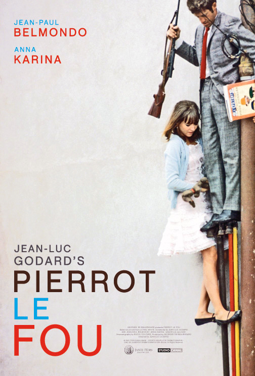
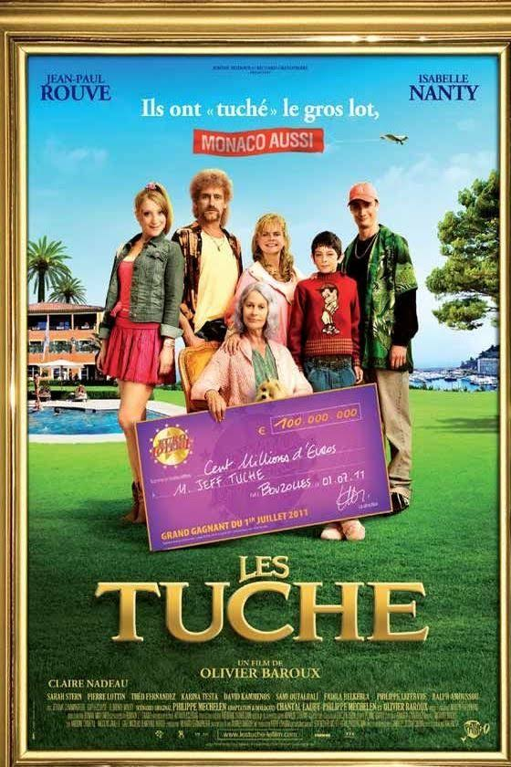

Olivier van den Broek
Entrepreneur/Cinéphile
Fondateur de Effilab, agence de marketing Digital revendue à Solocal en 2015. Je me concentre aujourd'hui sur des activités d'investissement au travers de la structure LO Capital. (Balibaris, Blend Hamburger, Ubble, Privateaser, Santédiscount, Naturabuy, La Belle Vie, real estate.)
Oeuvres Majeures
|  |
Pierrot le fouBande AnnonceL'odyssée à travers la France de Ferdinand dit Pierrot le Fou et de son amie Marianne, poursuivis par des gangsters à la mine patibulaire. |
|  |
Les tuchesBande AnnonceFilm d'auteur de la nouvelle vague. Satire sociale puissante opposant la haute société et le clan tuche. Ce film fort est également un plaidoyer pour la gastronomie du nord de la France et en particulier ces petits bâtons de pomme de terre qu'on appelle les frites. |
 |
Les kairaBande AnnonceInvitation à la réflexion sur l'état des banlieues françaises et les aspirations, parfois simples, d'une bande d'amis boulversants de sincérité. |